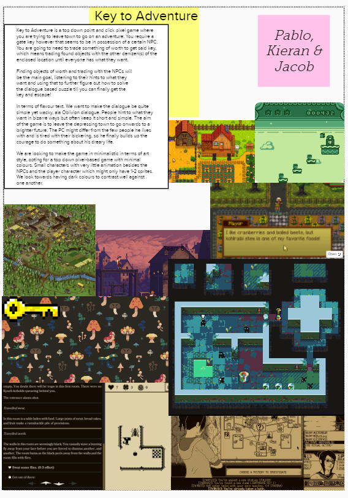

The procces of creating a text-based videogame in two weeks using the theme 'Call and Response' as the idea for the game.
18/10/2020
First of all, was to take an idea and develop it. For this, we used a technique called mood-board, where we would be posting screenshots of items or different references that will shape our ideas. We knew that because of the time we had, only two weeks, it should be a simple game with one or two mechanics at most. We decided that a pixel art aesthetic will fit perfectly this game also it would be easier for the artist to draw different assets in a short time. That is why we used the game Stardew Valley as a reference because they have lots of different assets with a simple pixel art aesthetic but, they are very distinguishable between them. With this aesthetic, we knew it had to be a 2D game with a top-view perspective. We knew how the game was going to look but, we did not have an idea about the mechanics. That was the tougher part of the idea process, we didn't want to make the typical text game where you have to read a lot of text and then select between some options and read more text again. That is why we decided to make it text-based through dialogues where people will tell you something in short sentences so it won't be hard for the player to read it. With all this in mind, we thought what could be the best kind of game to fit in this dialogue-based mechanic. We went through some ideas like a text chat on a mobile phone or a detective game with clues in a crime scene and some suspects, but we didn't know how to develop these ideas to make a whole videogame. Even so, this process was not a waste of time we decided that we could aim for a puzzle-like game where different will ask you for something in a more or less cryptic way, where you have to deduce what item they are asking for. We finally had a core mechanic for the game but, we still needed how to make that individual mechanic into a complete videogame. This is where the story takes part in the action we had to give it a meaning to the mechanic to make sense for the player. Taking into account that we were going to talk to different people who would be asking for different objects we thought about a trading chain, where you start with an object which you can trade for something else and that new object trade it for another thing until you get the final and desired object. What desired object the character would want? We made that question to ourselves and somehow we came up with the idea of a key, a key that will liberate the character from... the city! A dull and desolate city where the character doesn't feel to belong to. In this way is how we developed the process of creating an idea from the very beginning with just a theme and a game type. We managed to develop each part individually and then put all of them together to create a simple videogame from scratch. I found this experience quite fascinating since I like to create little prototypes of ideas just for fun and to improve in specific things without the pressure of having a big project in your hands and a lot of people involved. Although something that I would have liked to have in this project since it is a text-based game is a better and deeper narrative with different options to choose and more significant NPCs in the world. Now the options are very limited and straightforward, you don't have different paths to solve the puzzle and our main mechanic that is trading objects it is not very explored, the item you have is the object you are going to trade next. On the other hand, I am quite happy with my part, the trading system I developed. I think it is a very scalable and robust system where you can have as many objects as you want and as many characters as you want with the items they need and the object they will give you, all that without needing to write a single line of code. For me, that is something to feel proud of because I think it is a useful tool for any designer who wants to implement this mechanic in his game. In my opinion, a game programmer not only has to develop the game itself but also has to make life easier for their designers and artists.
25/10/2020
For this task, we showed what we had of the prototype to the rest of the class so they could give us some feedback as we were just in the middle of the sprint. I enjoyed this workshop, seeing what the other teams were able to develop in one week and the different approaches they took for the same idea. It was also a very productive workshop since the group that reviewed our prototype gave us really helpful feedback that we took into account for the second week of the sprint. We made some choices that we were not sure they were going to work so we waited for the feedback to make new adjustments or leave it as it was. We received some pieces of advice about the colour palette, which made the game look very homogeneous so the interactable items and the characters did not stand out that much and sometimes it was hard to distinguish them well, so we decided to outline with strong colours our character and pickable objects. They also told us to implement a more narrative so the player could understand better the situation that was going on. We already knew that our prototype did not have any narrative at the moment, but we were expecting to add some dialogues to the NPCs the player will find in the city. With this feedback, we knew that this had to be our top priority for the next week, giving some narrative to the mechanic so the player could understand why he was doing what he was doing. I really appreciated that feedback, it was a good experience to see how people see and understand the idea you have developed. Maybe in your head, everything works together and has logic, but that is because you have been developing the idea since the very beginning. It is not until a third person plays it and give you feedback that you can be entirely sure that the idea works and also has a logic for the rest of people. This is why I think that every game should be played by people outside of the development group before it is released to the public, to see if your game idea is clear and understandable by most of the people. Your idea does not work until other people say it works.
01/11/2020
I really enjoyed this task, reviewing all the games developed by the other teams. It was quite interesting seeing how much they could accomplish in just two weeks using a specific game genre. I spent one whole afternoon reviewing all the game and it had quite a lot of fun, two specific games types were more used above all of the different games: the more narrative style with different options to choose to get into different paths of the story and the more relaxed storytelling where the player was a passive actor and the narrative was focused on a self-contained story with no options so the player could just relaxed and take it as reading a book. On my preferences I prefered the narrative storytelling where the player can take part of the story and choose between different options, I think that is a great value that the narrative games can offer over the classic books. I was surprised by a game of this type called Yemeni. The story took part in one night on a hijacked ship, you are one of the hijackers and along the night you start to experience some paranormal activities among your colleagues in crime and the actual crew of the ship. The game always gives you the option to keep exploring at the expense of your mental health or just leave the boat, earn no reward and everything you have done for nothing. I enjoyed this game because it felt that it was always pushing you to keep exploring the events that were happening but with the fear of going totally insane if you chose the wrong option and I liked how they balanced the exploration/insanity mechanic, because if you wanted to find out what was happening you had to lose sometimes some sanity in order to keep going with the story and I thought that was a really good design decision to make the player stop and think wich action was the best one. About the winning game 'Metaspeak', I think it is a well-deserved prize for them, among all the games this was the most polished one and felt like a final product. Although its mechanic was not that complex it was really well executed to make the story flows. The story was quite fascinating and unique it has some parts where it makes you think about what we define as a conscience. Overall it was a really good activity to show ourselves how much we could achieve in just two weeks. Also, it was a good activity to get to know better our classmates, showing great ideas and having a general look at the different roles every person was interested in and their strong points.